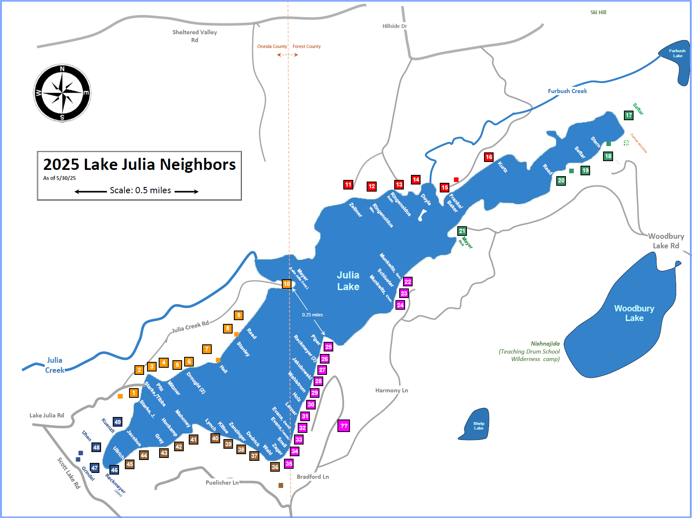
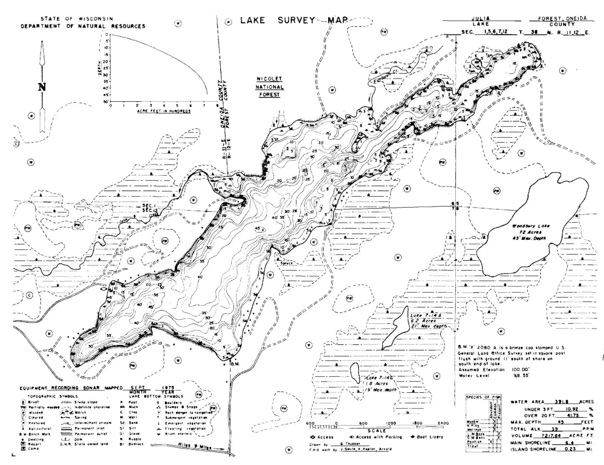
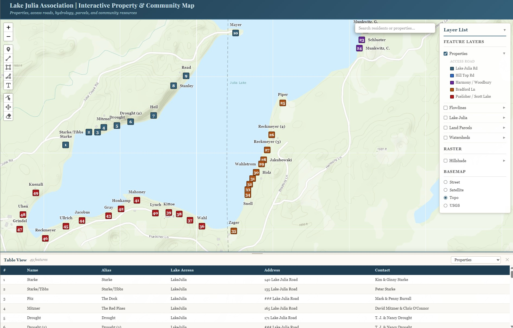
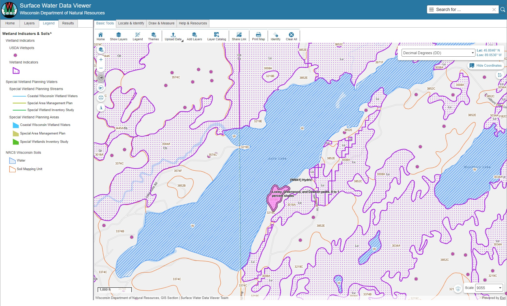

Maps & GIS
House locations, depth contours, parcel data, and an interactive GIS viewer for Lake Julia.
House locations, depth contours, parcel data, and an interactive GIS viewer for Lake Julia.
House Map
49 identified properties numbered #1–49 beginning at the public boat landing, color-coded by access road. Updated episodically since 2002 and sized at 18" × 24", prints clearly at full size. House numbers are used throughout this site to identify properties and families.

Depth Map
Wisconsin DNR depth survey of the lake bed (1975), plus a simplified version highlighting the more treacherous rock beds and shallow areas. Observations through 2020 show no significant changes from the original survey.
Download State Bathymetric Map (.pdf) →
Download Simplified Hazard Map (.pdf) →

Interactive GIS Maps
These tools are best experienced in full screen, especially on phones and tablets. Click the link on each card to launch the viewer in a new tab.

LJA GISA Lake Julia Association web application built to explore the properties, roads, and natural features of the Lake Julia community. Browse all 49 numbered properties with resident information, and overlay hydrology, land parcels, watershed boundaries, and hillshade terrain. Switch between street, satellite, topo, and USGS basemaps to suit your needs. Search residents or properties by name, click any feature for detailed information, or use the built-in drawing tools to sketch notes and take measurements.
Created and maintained by the LJA Board. Contact the site administrator with questions.
Open interactive map →
WI DNRThe Surface Water Data Viewer (SWDV) is a DNR data delivery system that provides interactive web mapping tools for a wide variety of datasets including chemistry (water, sediment), physical and biological (macroinvertebrate, fish) data. As a full-featured enterprise web application, the SWDV offers many capabilities beyond basic mapping — refer to the User Guide below for details.
Open interactive map → SWDV User Guide (PDF) →County Parcel Maps
The county taxing authorities publish detailed maps showing tax parcels, owner information, and assessment and payment status. Lake Julia spans both Oneida County (west half) and Forest County (east half).